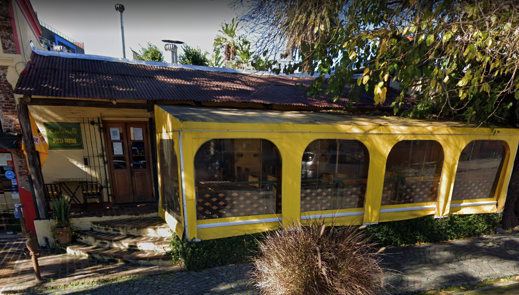
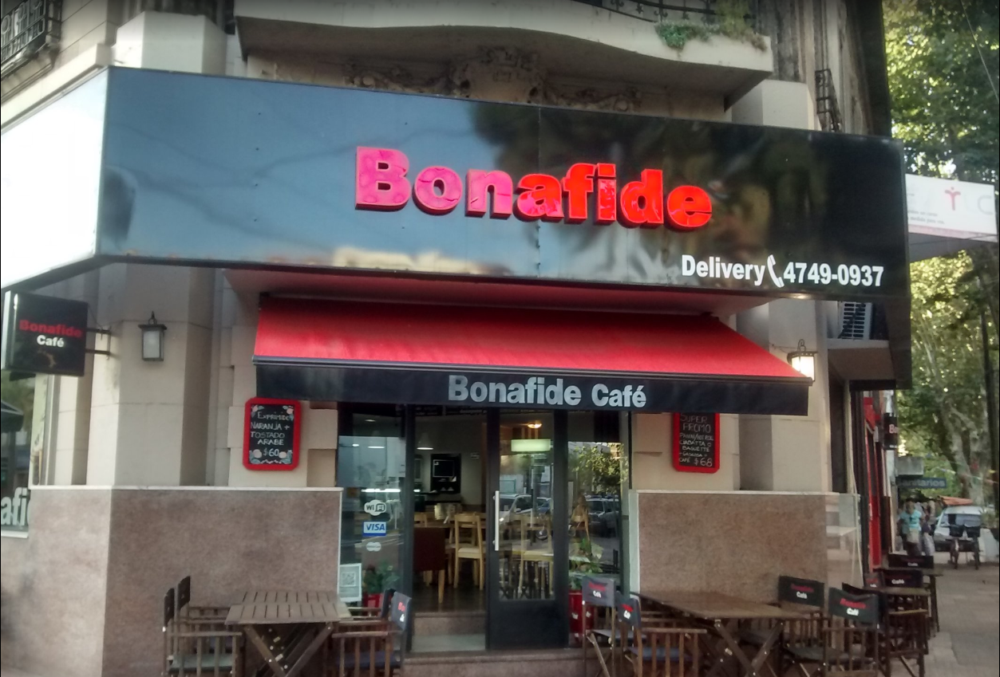

Kanoo Delta | Rio Sarmiento 54

El bodegón de los inmigrantes | Italia 1398

En este bodegón tenés para probar distintos tipos de carnes, entradas, al igual que vinos y cervezas.
Lopez May pulpería | Sáenz Peña 1400

Esto no es un simple restaurante, esto es una despensa, bazar, comedero y vinería donde podés disfrutar.
Cachavacha | Sarmiento 420
Como dice en el cartel se especializan en pastas y pizzas, pero eso no quiere decir que no cuenten con distinta variedad. Verdaderamente se van a sorprender.
Celestino's | Av. Cazón 902

Lindo restaurant con vistas a la calle, en esquina, para disfrutar con familia y parejas, la comida muy buena abundante y con variedad de menu.
María Luján Ristorante | Av. Victorica 509

Terraza al borde del rio con buena iluminación y embarcaciones bellas. Un precioso restaurant para disfrutar de una buena comida y unas bellas vistas.
Restaurant Vivanco | Gral. Bartolomé Mitre 74

Club de remo en Tigre, frente al río, mesas en la mansión y el jardín, gran parrilla envidriada en el parque, muy buena atención. Una excelente propuesta de almuerzos en día de semana, en vacaciones de invierno.
Tibuk Bistró | Sáenz Peña 1263

Lugar bien ambientado, buena musica y volumen ideal para poder conversar. Con platos gourmet y los tragos bien preparados.
Gato Blanco | Barco desde Estación Fluvial Gral. Bartolomé Mitre 345
Es un lugar con una vista increible, un jardín hermoso, la comida impecable y la carta muy buena. Clásicos platos de bodegón de Buenos Aires. Cuando se quiere pasar un día en Tigre, Gato Blanco se vuelve una excelente opción.
LA PROVE -Resto & Grill- | Montes de Oca 895

Si te gustan las parrilladas, o una buena comida que te llene tenés que venir a este restaurant que te va a sorprender con su variedad de comidas y delicias.
Bonafide | Av. Cazón 1401
El mejor lugar para desayunar o merendar, con un café de muy buena calidad y buenísimas promociones de diversos acompañamientos dulces y salados
La Moderna | Av. Cazón 1028

Un lugar excelente para merendar, en esta confitería te podés encontrar con un ambiente cálido, familiero, con una excelente atención y un amplio menú.
Via Toscana Heladería Artesanal | Av. Victorica 470

El lugar es sumamente exótico y único. Los helados son de muy buena calidad, uno encuentra el verdadero sabor de lo que pide. Con una gran trayectoria de mas de 40 años en la elaboriacion de helados artesanales.
Helados ARAUCARIA | Sarmiento 420

Una magnífica heladería que también incluye otros tipos de postres como batidos, tortas, entre
otras cosas.